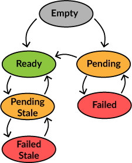

Async Model Data
In real applications you quite often have to deal with model data that is asynchronously loaded or updated. Usual approach would be to use Option[A] to
indicate whether data is there or not, but then you cannot deal with error situations. Using Either[ErrorType, Option[A]] or Try[Option[A]] gives your some
control over errors, but if you consider refreshing old data and getting an error back, what should the result be? Not to mention knowing how long the async
operation has been running and notifying the user when it has been delayed for too long. Clearly the existing data containers are not enough for this.
Potential Data

A Pot[+A] represents potential data that may exist in six different states as seen in the picture on the right. Pot provides you with the same interface as
Option or Try, making it very easy to use in your existing application code. Things like for comprehension, getOrElse or even recover are supported.
Like Option, Pot is immutable and you have to create a new Pot when the state or content changes.
Pot usually starts as an Empty (option None) or Ready (option Some), depending on whether you have the data available or not. You can use the empty
method to create a correctly typed Empty.
var myData = Pot.empty[String] // myData is now Empty
When you make an async call to fetch data, change the state to Pending with the help of pending function.
myData = myData.pending() // myData is now Pending
Assuming you get a successful response from the server, you can change the state to Ready.
myData = myValue.ready(data) // myData is now Ready(data)
In case something went wrong, you can store the exception in the Failed state.
myData = myData.fail(exception) // myData is now Failed(exception)
When you are ready to refresh your Ready data, you again call pending but this time it results in a PendingStale indicating that old data is still there to be
used while new data is fetched.
myData = myData.pending() // myData is now PendingStale(data)
In case the async call gets new results, the state goes to Ready(newData) but if something goes wrong, you'll end up with FailedStale containing the
old data.
myData = myData.fail(exception) // myData is now FailedStale(data, exception)
Usage
Pot exposes its state via following functions.
def isEmpty: Boolean
def nonEmpty = !isEmpty
def isPending: Boolean
def isStale: Boolean
def isFailed: Boolean
def isReady: Boolean
def state: PotState
You can query specific state via isX functions, or use state for matching. Note that isEmpty means there is no data in the Pot, so states Pending and
Failed, in addition to Empty, all return true.
Otherwise a Pot works like an Option (Empty, Pending and Failed work like None).
Retries
A common pattern with async data is to retry failed loads a few times. Pot supports this pattern by providing a retry policy (retryPolicy) and some state
management to deal with retries. A typical case is to check for retry after Pot goes into failed state and then retry the operation like in the example below:
val value: Pot[A] = ...
case PotEmpty =>
updated(value.pending(retries), updateEffect)
case PotFailed =>
value.retryPolicy.retry(action.value, updateEffect) match {
case Right((nextPolicy, retryEffect)) =>
updated(value.retry(nextPolicy), retryEffect)
case Left(ex) =>
updated(value.fail(ex))
}
The Pot.retry function sets the Pot into Pending (or PendingStale) state and updates retryPolicy. Common retry policies Immediate and Backoff are
available in the Retry object, but feel free to roll your own.
Waiting Time
The pending states of Pot store a time value when created. You can access this through startTime, or you can directly get the duration of the operation
with duration(currentTime). This is useful in an user interface, where you'll want to show an indicator if the operation is taking too long. If
an operation fails and you retry it, the startTime will remain the same, giving you the total duration of the retried operations.